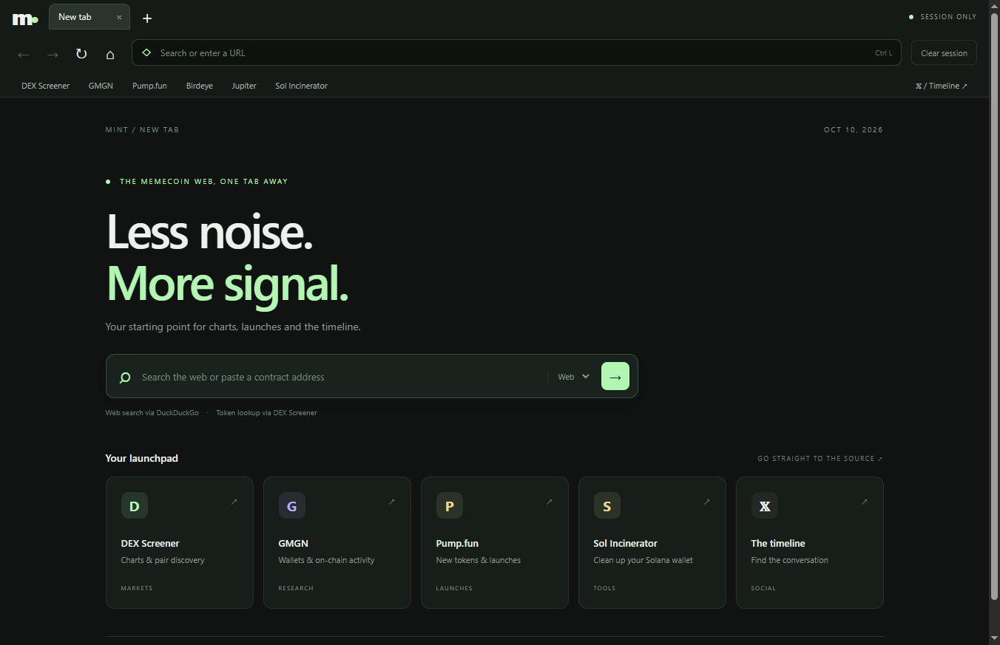
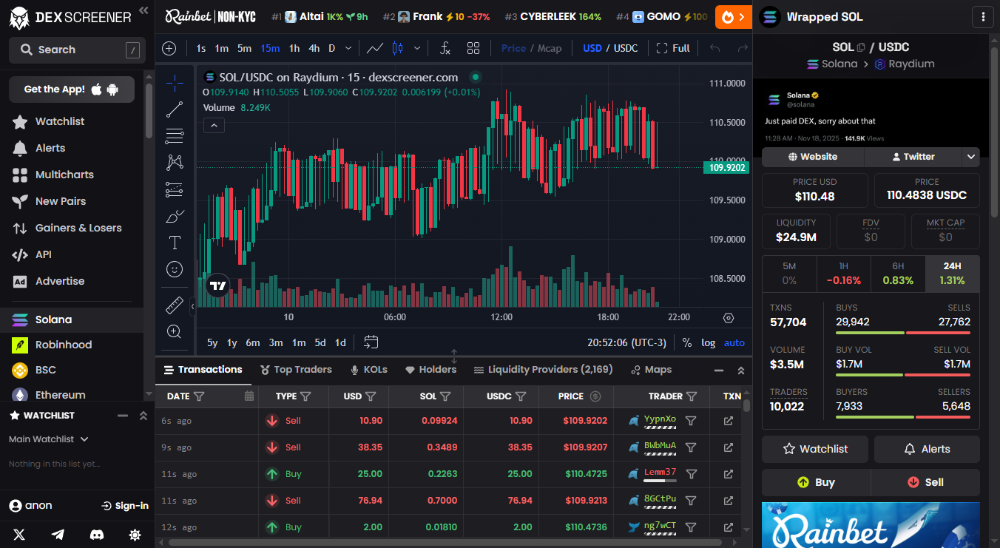
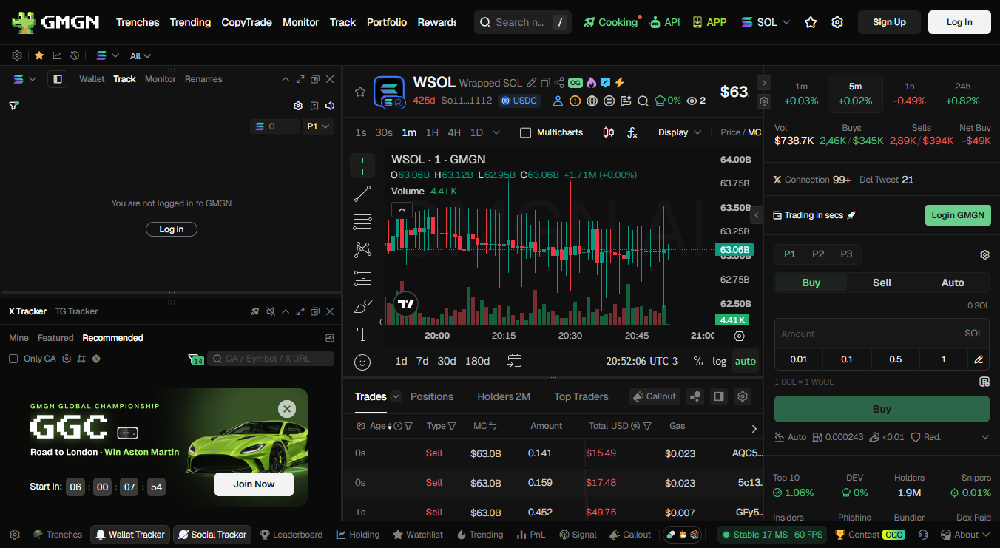

Real tabs. Real websites.
Navigation, downloads and keyboard shortcuts. Built on Chromium and Electron.
THE MEMECOIN WEB, ONE TAB AWAY
Your browser for charts, launches and the timeline.
Minimal by design. Ready for your daily flow.

Navigation, downloads and keyboard shortcuts. Built on Chromium and Electron.
DEX Screener, GMGN, Pump.fun, Birdeye, Jupiter, Sol Incinerator and X.
No browser account or added analytics. Website storage stays in memory. Clear it in one click.
BUILT FOR THE CHARTS
Embedded chart frames, tested with real pair pages.


Mint does not add tracking. Sites you visit still see your public IP and may collect data under their own policies. This browser is not a VPN or anonymity guarantee.
The current MVP has no wallet extensions, saved passwords or automatic updater. Windows builds are unsigned; verify the release checksum before running.
Read the privacy details ↗